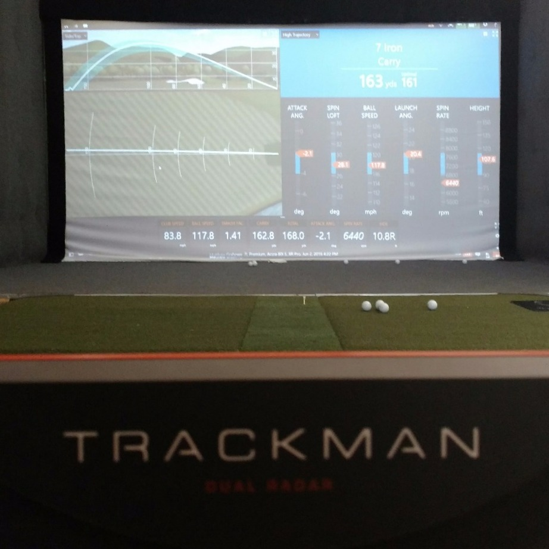
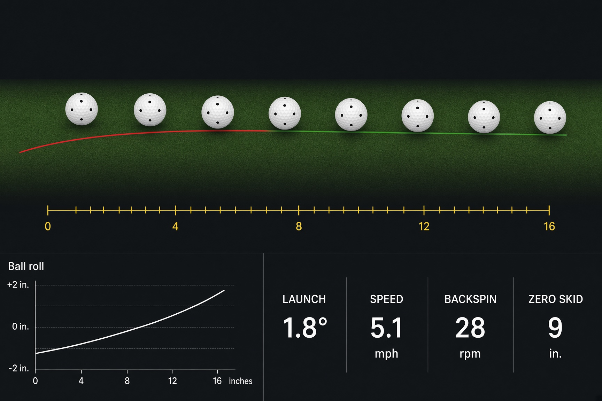

Technology
Combining the most advanced technology and a comprehensive inventory of club options. Test the latest heads and shafts so we can find the optimal golf club for you and your swing.
Downtown Washington, D.C.
Washington, D.C.'s Most Advanced Golf Fitting Center
better golf…by design
★ 5.0 on Booksy · 343 reviews
Golf Digest 100 Best Clubfitter 2018 International Clubmaker of the Year TaylorMade National Fitters CouncilNo matter what anyone else might say, you just cannot get equipment that properly fits your swing long distance. Some things can only be determined by actually having you hit test clubs.
So why would you let someone tell you they can choose the right set of clubs when they have never even seen you hit a ball? Come in to The Golf Doctor-DC and let us help you the way that you deserve.
Explore fittingsTrackMan Simulator
Book time to play or practice at The Golf Doctor DC. Use the state-of-the-art TrackMan simulator and keep your game sharp in the off-season. Real distances. Real play.
Reserve simulator timeCombining the most advanced technology and a comprehensive inventory of club options. Test the latest heads and shafts so we can find the optimal golf club for you and your swing.
With more than 22 years fitting and building golf clubs, Matt Grabowy has been recognized by Golf Digest as a Top 100 Clubfitter since 2011 and was named 2018 Worldwide Clubmaker of the Year.

Already have clubs but want the latest technology? Trade in your current set and apply the credit toward new purchases. Trade-in prices meet or exceed online prices.
Club Fitting
Driver, long game, irons, and putter — bundled and $200 off the individual price.
Fine-tune tee shots with TrackMan 4 so you get maximum carry and roll.
Heads, shafts, and set make-up — offset, sole, blade or cavity, and the long irons you actually need.
Fairway woods, hybrids, or both — the right head, loft, and shaft for how you actually play.
Bounce, grind, and gapping so your short game actually matches the courses you play.
Length, lie, loft, head type, and grip — the club you use more than twice as often as any other.
For golfers starting out — length, lie, and grips that fit your body before you learn the game on the wrong equipment.
The Studio


From the fitting bay
★★★★★“Super knowledgeable and patient.”
★★★★★“Matt is great. He takes his time, and is quite knowledgeable. Would come back in a heartbeat.”
★★★★★“Matt is a consummate professional. A prior review said he treated them like Tiger Woods, and I can echo the same experience.”
About
Beginning in 2016, The Golf Doctor-DC brought two decades of fitting and building — from beginners to PGA Tour winners — to Washington. The original Golf Doctor was founded in 1996 to give every golfer a level of service previously reserved for professionals.
All fittings by appointment. The studio is on the third floor at 1108 K Street NW.